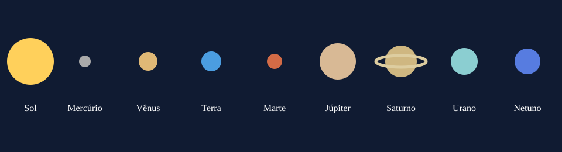

Um primeiro olhar para o céu
Por onde começar?
Por que a Lua parece mudar de forma? Quais pontos luminosos são planetas? A astronomia começa com a curiosidade e a observação cuidadosa do céu.
A ideia do Céu Aberto é reunir algumas informações para quem quer começar a observar o céu. Aqui você encontra os planetas do Sistema Solar, dicas para a primeira observação e uma ficha de inscrição para uma oficina fictícia.

O que você encontrará
- Planetas e conceitos básicos do Sistema Solar.
- Passo a passo para observar e registrar o céu.
- Formulário para uma oficina fictícia de astronomia.
Antes de tentar reconhecer tudo no céu, vale a pena parar, olhar com calma e anotar o que chamou a atenção.
Essa é a proposta do nosso site. Para aprofundar o tema, visite o guia do Sistema Solar da NASA.